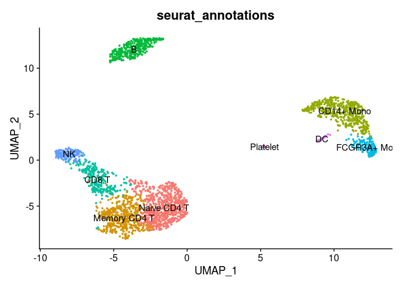
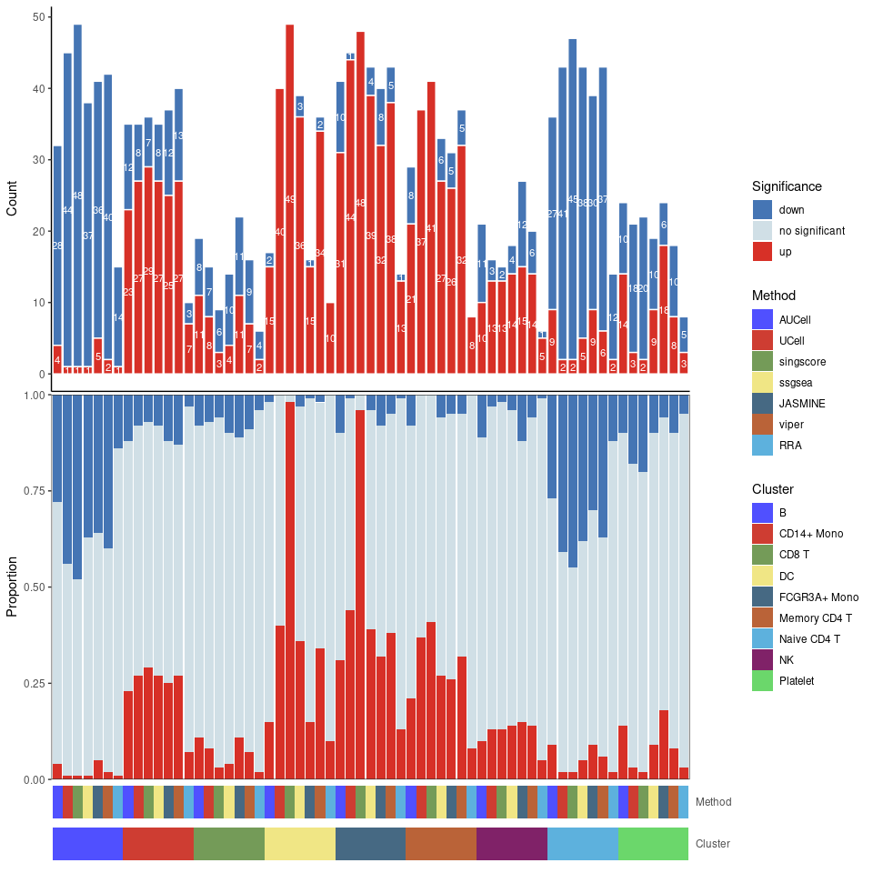

Integrate all single cell rank-based gene set enrichment analysis and easy to visualize the results.
For more details, please view irGSEA And you can view Chinese tutorial

Installation
# install packages from CRAN
cran.packages <- c("aplot", "BiocManager", "data.table", "devtools",
"doParallel", "doRNG", "dplyr", "ggfun", "gghalves",
"ggplot2", "ggplotify", "ggridges", "ggsci", "irlba",
"magrittr", "Matrix", "msigdbr", "pagoda2", "pointr",
"purrr", "RcppML", "readr", "reshape2", "reticulate",
"rlang", "RMTstat", "RobustRankAggreg", "roxygen2",
"Seurat", "SeuratObject", "stringr", "tibble", "tidyr",
"tidyselect", "tidytree", "VAM")
for (i in cran.packages) {
if (!requireNamespace(i, quietly = TRUE)) {
install.packages(i, ask = F, update = F)
}
}
# install packages from Bioconductor
bioconductor.packages <- c("AUCell", "BiocParallel", "ComplexHeatmap",
"decoupleR", "fgsea", "ggtree", "GSEABase",
"GSVA", "Nebulosa", "scde", "singscore",
"SummarizedExperiment", "UCell",
"viper","sparseMatrixStats")
for (i in bioconductor.packages) {
if (!requireNamespace(i, quietly = TRUE)) {
install.packages(i, ask = F, update = F)
}
}
# install packages from Github
if (!requireNamespace("irGSEA", quietly = TRUE)) {
devtools::install_github("chuiqin/irGSEA", force =T)
}Optional installation if you want to perform VISION, gficf, Sargent, ssGSEApy, GSVApy, etc
#### install packages from Github
# VISION
if (!requireNamespace("VISION", quietly = TRUE)) {
devtools::install_github("YosefLab/VISION", force =T)
}
# mdt need ranger
if (!requireNamespace("ranger", quietly = TRUE)) {
devtools::install_github("imbs-hl/ranger", force =T)
}
# gficf need RcppML (version > 0.3.7) package
if (!utils::packageVersion("RcppML") > "0.3.7") {
message("The version of RcppML should greater than 0.3.7 and install RcppML package from Github")
devtools::install_github("zdebruine/RcppML", force =T)
}
# please first `library(RcppML)` if you want to perform gficf
if (!requireNamespace("gficf", quietly = TRUE)) {
devtools::install_github("gambalab/gficf", force =T)
}
# GSVApy and ssGSEApy need SeuratDisk package
if (!requireNamespace("SeuratDisk", quietly = TRUE)) {
devtools::install_github("mojaveazure/seurat-disk", force =T)
}
# sargent
if (!requireNamespace("sargent", quietly = TRUE)) {
devtools::install_github("Sanofi-Public/PMCB-Sargent", force =T)
}
# pagoda2 need scde package
if (!requireNamespace("scde", quietly = TRUE)) {
devtools::install_github("hms-dbmi/scde", force =T)
}
# if error1 (functio 'sexp_as_cholmod_sparse' not provided by package 'Matrix')
# or error2 (functio 'as_cholmod_sparse' not provided by package 'Matrix') occurs
# when you perform pagoda2, please check the version of irlba and Matrix
# It's ok when I test as follow：
# R 4.2.2 irlba(v 2.3.5.1) Matrix(1.5-3)
# R 4.3.1 irlba(v 2.3.5.1) Matrix(1.6-1.1)
# R 4.3.2 irlba(v 2.3.5.1) Matrix(1.6-3)
#### create conda env
# If error (Unable to find conda binary. Is Anaconda installed) occurs,
# please perform `reticulate::install_miniconda()`
if (! "irGSEA" %in% reticulate::conda_list()$name) {
reticulate::conda_create("irGSEA")
}
# if python package exist
python.package <- reticulate::py_list_packages(envname = "irGSEA")$package
require.package <- c("anndata", "scanpy", "argparse", "gseapy", "decoupler")
for (i in seq_along(require.package)) {
if (i %in% python.package) {
reticulate::conda_install(envname = "irGSEA", packages = i, pip = T)
}
}Some users can accelerate by mirror
options(BioC_mirror="https://mirrors.tuna.tsinghua.edu.cn/bioconductor/")
options("repos" = c(CRAN="http://mirrors.cloud.tencent.com/CRAN/"))
# install packages from CRAN
cran.packages <- c("aplot", "BiocManager", "data.table", "devtools",
"doParallel", "doRNG", "dplyr", "ggfun", "gghalves",
"ggplot2", "ggplotify", "ggridges", "ggsci", "irlba",
"magrittr", "Matrix", "msigdbr", "pagoda2", "pointr",
"purrr", "RcppML", "readr", "reshape2", "reticulate",
"rlang", "RMTstat", "RobustRankAggreg", "roxygen2",
"Seurat", "SeuratObject", "stringr", "tibble", "tidyr",
"tidyselect", "tidytree", "VAM")
for (i in cran.packages) {
if (!requireNamespace(i, quietly = TRUE)) {
install.packages(i, ask = F, update = F)
}
}
# install packages from Bioconductor
bioconductor.packages <- c("AUCell", "BiocParallel", "ComplexHeatmap",
"decoupleR", "fgsea", "ggtree", "GSEABase",
"GSVA", "Nebulosa", "scde", "singscore",
"SummarizedExperiment", "UCell", "viper")
for (i in bioconductor.packages) {
if (!requireNamespace(i, quietly = TRUE)) {
install.packages(i, ask = F, update = F)
}
}
# install packages from git
if (!requireNamespace("irGSEA", quietly = TRUE)) {
devtools::install_git("https://gitee.com/fan_chuiqin/irGSEA.git", force =T)
}
# VISION
if (!requireNamespace("VISION", quietly = TRUE)) {
devtools::install_git("https://gitee.com/fan_chuiqin/VISION.git", force =T)
}
# mdt need ranger
if (!requireNamespace("ranger", quietly = TRUE)) {
devtools::install_git("https://gitee.com/fan_chuiqin/ranger.git", force =T)
}
# gficf need RcppML (version > 0.3.7) package
if (!utils::packageVersion("RcppML") > "0.3.7") {
message("The version of RcppML should greater than 0.3.7 and install RcppML package from Git")
devtools::install_git("https://gitee.com/fan_chuiqin/RcppML.git", force =T)
}
# please first `library(RcppML)` if you want to perform gficf
if (!requireNamespace("gficf", quietly = TRUE)) {
devtools::install_git("https://gitee.com/fan_chuiqin/gficf.git", force =T)
}
# GSVApy and ssGSEApy need SeuratDisk package
if (!requireNamespace("SeuratDisk", quietly = TRUE)) {
devtools::install_git("https://gitee.com/fan_chuiqin/seurat-disk.git",
force =T)}
# sargent
if (!requireNamespace("sargent", quietly = TRUE)) {
devtools::install_git("https://gitee.com/fan_chuiqin/PMCB-Sargent.git",
force =T)}
# pagoda2 need scde package
if (!requireNamespace("scde", quietly = TRUE)) {
devtools::install_git("https://gitee.com/fan_chuiqin/scde.git", force =T)
}
#### create conda env
# If error (Unable to find conda binary. Is Anaconda installed) occurs,
# please perform `reticulate::install_miniconda()`
if (! "irGSEA" %in% reticulate::conda_list()$name) {
reticulate::conda_create("irGSEA")
}
# if python package exist
python.package <- reticulate::py_list_packages(envname = "irGSEA")$package
require.package <- c("anndata", "scanpy", "argparse", "gseapy", "decoupler")
for (i in require.package) {
if (! i %in% python.package) {
reticulate::conda_install(envname = "irGSEA", packages = i, pip = T,
pip_options = "-i https://pypi.tuna.tsinghua.edu.cn/simple")
}
}
load example dataset
load PBMC dataset by R package SeuratData
# devtools::install_github('satijalab/seurat-data')
library(SeuratData)
# view all available datasets
View(AvailableData())
# download 3k PBMCs from 10X Genomics
InstallData("pbmc3k")
# the details of pbmc3k.final
?pbmc3k.final
library(Seurat)
library(SeuratData)
# loading dataset
data("pbmc3k.final")
pbmc3k.final <- UpdateSeuratObject(pbmc3k.final)
# plot
DimPlot(pbmc3k.final, reduction = "umap",
group.by = "seurat_annotations",label = T) + NoLegend()
# set cluster to idents
Idents(pbmc3k.final) <- pbmc3k.final$seurat_annotationsCalculate enrichment scores
calculate enrichment scores, return a Seurat object including these score matrix
AUcell or ssGSEA will run for a long time if there are lots of genes or cells. Thus, It’s recommended to keep high quality genes or cells.
Error (Valid ‘mctype’: ‘snow’ or ‘doMC’) occurs when ncore > 1 : please ensure the version of AUCell >= 1.14 or set ncore = 1.
It can be ignore when warnning occurs as follow: 1. closing unused connection 3 (localhost) 2. Using ‘dgCMatrix’ objects as input is still in an experimental stage. 3. xxx genes with constant expression values throuhgout the samples. 4. Some gene sets have size one. Consider setting ‘min.sz’ > 1.
pbmc3k.final <- irGSEA.score(object = pbmc3k.final, assay = "RNA",
slot = "data", seeds = 123, ncores = 4,
min.cells = 3, min.feature = 0,
custom = F, geneset = NULL, msigdb = T,
species = "Homo sapiens", category = "H",
subcategory = NULL, geneid = "symbol",
method = c("AUCell", "UCell", "singscore",
"ssgsea", "JASMINE", "viper"),
aucell.MaxRank = NULL, ucell.MaxRank = NULL,
kcdf = 'Gaussian')
#> Validating object structure
#> Updating object slots
#> Ensuring keys are in the proper structure
#> Ensuring feature names don't have underscores or pipes
#> Object representation is consistent with the most current Seurat version
#> Calculate AUCell scores
#> Warning: Feature names cannot have underscores ('_'), replacing with dashes
#> ('-')
#> Warning: Feature names cannot have underscores ('_'), replacing with dashes
#> ('-')
#> Finish calculate AUCell scores
#> Calculate UCell scores
#> Warning: Feature names cannot have underscores ('_'), replacing with dashes
#> ('-')
#> Warning: Feature names cannot have underscores ('_'), replacing with dashes
#> ('-')
#> Finish calculate UCell scores
#> Calculate singscore scores
#> Warning: Feature names cannot have underscores ('_'), replacing with dashes
#> ('-')
#> Warning: Feature names cannot have underscores ('_'), replacing with dashes
#> ('-')
#> Finish calculate singscore scores
#> Calculate ssgsea scores
#> Warning in .local(expr, gset.idx.list, ...): Using 'dgCMatrix' objects as input
#> is still in an experimental stage.
#> Warning in .filterFeatures(expr, method): 1 genes with constant expression
#> values throuhgout the samples.
#> [1] "Calculating ranks..."
#> [1] "Calculating absolute values from ranks..."
#> Warning: Feature names cannot have underscores ('_'), replacing with dashes
#> ('-')
#> Warning: Feature names cannot have underscores ('_'), replacing with dashes
#> ('-')
#> Finish calculate ssgsea scores
#> Calculate JASMINE scores
#> Warning: Feature names cannot have underscores ('_'), replacing with dashes
#> ('-')
#> Warning: Feature names cannot have underscores ('_'), replacing with dashes
#> ('-')
#> Finish calculate jasmine scores
#> Calculate viper scores
#> Warning: Feature names cannot have underscores ('_'), replacing with dashes
#> ('-')
#> Warning: Feature names cannot have underscores ('_'), replacing with dashes
#> ('-')
#> Finish calculate viper scores
Seurat::Assays(pbmc3k.final)
#> [1] "RNA" "AUCell" "UCell" "singscore" "ssgsea" "JASMINE"
#> [7] "viper"Integrate differential gene set
Wlicox test is perform to all enrichment score matrixes and gene sets with adjusted p value < 0.05 are used to integrated through RRA. Among them, Gene sets with p value < 0.05 are statistically significant and common differential in all gene sets enrichment analysis methods. All results are saved in a list.
result.dge <- irGSEA.integrate(object = pbmc3k.final,
group.by = "seurat_annotations",
metadata = NULL, col.name = NULL,
method = c("AUCell","UCell","singscore",
"ssgsea", "JASMINE", "viper"))
#> Calculate differential gene set : AUCell
#> Calculate differential gene set : UCell
#> Calculate differential gene set : singscore
#> Calculate differential gene set : ssgsea
#> Calculate differential gene set : JASMINE
#> Calculate differential gene set : viper
class(result.dge)
#> [1] "list"Visualization
heatmap plot
Show co-upregulated or co-downregulated gene sets per cluster in RRA
irGSEA.heatmap.plot <- irGSEA.heatmap(object = result.dge,
method = "RRA",
top = 50,
show.geneset = NULL)
irGSEA.heatmap.plot
Bubble.plot
Show co-upregulated or co-downregulated gene sets per cluster in RRA.
If error (argument “caller_env” is missing, with no default) occurs : please uninstall ggtree and run “remotes::install_github(”YuLab-SMU/ggtree”)“.
irGSEA.bubble.plot <- irGSEA.bubble(object = result.dge,
method = "RRA",
top = 50)
irGSEA.bubble.plot
upset plot
Show the intersections of significant gene sets among clusters in RRA
Don’t worry if warning happens : the condition has length > 1 and only the first element will be used. It’s ok.
irGSEA.upset.plot <- irGSEA.upset(object = result.dge,
method = "RRA")
irGSEA.upset.plotStacked bar plot
Show the intersections of significant gene sets among clusters in all methods
irGSEA.barplot.plot <- irGSEA.barplot(object = result.dge,
method = c("AUCell", "UCell", "singscore",
"ssgsea", "JASMINE", "viper", "RRA"))
irGSEA.barplot.plot
2. local show
Show the expression and distribution of special gene sets in special gene set enrichment analysis method
density scatterplot
Show the expression and distribution of “HALLMARK-INFLAMMATORY-RESPONSE” in Ucell on UMAP plot.
scatterplot <- irGSEA.density.scatterplot(object = pbmc3k.final,
method = "UCell",
show.geneset = "HALLMARK-INFLAMMATORY-RESPONSE",
reduction = "umap")
scatterplothalf vlnplot
Show the expression and distribution of “HALLMARK-INFLAMMATORY-RESPONSE” in Ucell among clusters.
halfvlnplot <- irGSEA.halfvlnplot(object = pbmc3k.final,
method = "UCell",
show.geneset = "HALLMARK-INFLAMMATORY-RESPONSE")
halfvlnplot
Show the expression and distribution of “HALLMARK-INFLAMMATORY-RESPONSE” between AUCell, UCell, singscore, ssgsea, JASMINE and viper among clusters.
vlnplot <- irGSEA.vlnplot(object = pbmc3k.final,
method = c("AUCell", "UCell", "singscore", "ssgsea",
"JASMINE", "viper"),
show.geneset = "HALLMARK-INFLAMMATORY-RESPONSE")
vlnplot
ridge plot
Show the expression and distribution of “HALLMARK-INFLAMMATORY-RESPONSE” in Ucell among clusters.
ridgeplot <- irGSEA.ridgeplot(object = pbmc3k.final,
method = "UCell",
show.geneset = "HALLMARK-INFLAMMATORY-RESPONSE")
ridgeplot
#> Picking joint bandwidth of 0.00533
density heatmap
Show the expression and distribution of “HALLMARK-INFLAMMATORY-RESPONSE” in Ucell among clusters.
densityheatmap <- irGSEA.densityheatmap(object = pbmc3k.final,
method = "UCell",
show.geneset = "HALLMARK-INFLAMMATORY-RESPONSE")
densityheatmap
Work with clusterProfiler package
#### work with clusterProfiler package ####
# load library
library(clusterProfiler)
library(tidyverse)
### kegg ###
# download kegg pathway (human) and write as gson file
kk <- clusterProfiler::gson_KEGG(species = "hsa")
gson::write.gson(kk, file = "./KEGG_20231128.gson")
# read gson file
kk2 <- gson::read.gson("./KEGG_20231123.gson")
# Convert to a data frame
kegg.list <- dplyr::left_join(kk2@gsid2name,
kk2@gsid2gene,
by = "gsid")
head(kegg.list)
# gsid name gene
# 1 hsa01100 Metabolic pathways 10
# 2 hsa01100 Metabolic pathways 100
# 3 hsa01100 Metabolic pathways 10005
# 4 hsa01100 Metabolic pathways 10007
# 5 hsa01100 Metabolic pathways 100137049
# 6 hsa01100 Metabolic pathways 10020
# Convert gene ID to gene symbol
gene_name <- clusterProfiler::bitr(kegg.list$gene,
fromType = "ENTREZID",
toType = "SYMBOL",
OrgDb = "org.Hs.eg.db")
kegg.list <- dplyr::full_join(kegg.list,
gene_name,
by = c("gene"="ENTREZID"))
# remove NA value if exist
kegg.list <- kegg.list[complete.cases(kegg.list[, c("gene", "SYMBOL")]), ]
head(kegg.list)
# gsid name gene SYMBOL
# 1 hsa01100 Metabolic pathways 10 NAT2
# 2 hsa01100 Metabolic pathways 100 ADA
# 3 hsa01100 Metabolic pathways 10005 ACOT8
# 4 hsa01100 Metabolic pathways 10007 GNPDA1
# 5 hsa01100 Metabolic pathways 100137049 PLA2G4B
# 6 hsa01100 Metabolic pathways 10020 GNE
# convert to list required by irGSEA package
kegg.list$name <- factor(kegg.list$name)
kegg.list <- kegg.list %>%
dplyr::group_split(name, .keep = F) %>%
purrr::map( ~.x %>% dplyr::pull(SYMBOL) %>% unique(.)) %>%
purrr::set_names(levels(kegg.list$name))
head(kegg.list)
### go bp ###
# download go bp (human) and write as gson file
go <- clusterProfiler::gson_GO(OrgDb = "org.Hs.eg.db", ont = "BP")
gson::write.gson(go, file = "./go_20231128.gson")
# read gson file
go2 <- gson::read.gson("./go_20231128.gson")
# Convert to a data frame
go.list <- dplyr::left_join(go2@gsid2name,
go2@gsid2gene,
by = "gsid")
head(go.list)
# gsid name gene
# 1 GO:0000001 mitochondrion inheritance <NA>
# 2 GO:0000002 mitochondrial genome maintenance 142
# 3 GO:0000002 mitochondrial genome maintenance 291
# 4 GO:0000002 mitochondrial genome maintenance 1763
# 5 GO:0000002 mitochondrial genome maintenance 1890
# 6 GO:0000002 mitochondrial genome maintenance 2021
# Convert gene ID to gene symbol
go.list <- dplyr::full_join(go.list,
go2@gene2name,
by = c("gene"="ENTREZID"))
# remove NA value if exist
go.list <- go.list[complete.cases(go.list[, c("gene", "SYMBOL")]), ]
head(go.list)
# gsid name gene SYMBOL
# 2 GO:0000002 mitochondrial genome maintenance 142 PARP1
# 3 GO:0000002 mitochondrial genome maintenance 291 SLC25A4
# 4 GO:0000002 mitochondrial genome maintenance 1763 DNA2
# 5 GO:0000002 mitochondrial genome maintenance 1890 TYMP
# 6 GO:0000002 mitochondrial genome maintenance 2021 ENDOG
# 7 GO:0000002 mitochondrial genome maintenance 3980 LIG3
# convert to list required by irGSEA package
go.list$name <- factor(go.list$name)
go.list <- go.list %>%
dplyr::group_split(name, .keep = F) %>%
purrr::map( ~.x %>% dplyr::pull(SYMBOL) %>% unique(.)) %>%
purrr::set_names(levels(go.list$name))
head(go.list)Work with newest Msigdb
#### work with newest Msigdb ####
# https://data.broadinstitute.org/gsea-msigdb/msigdb/release/
# In this page, you can download human/mouse gmt file or db.zip file
# The db.zip file contains metadata information for the gene set
# load library
library(clusterProfiler)
library(tidyverse)
library(DBI)
library(RSQLite)
### db.zip ###
# download zip file and unzip zip file
zip_url <- "https://data.broadinstitute.org/gsea-msigdb/msigdb/release/2023.2.Hs/msigdb_v2023.2.Hs.db.zip"
local_zip_path <- "./msigdb_v2023.2.Hs.db.zip"
download.file(zip_url, local_zip_path)
unzip(local_zip_path, exdir = "./")
# code modified by https://rdrr.io/github/cashoes/sear/src/data-raw/1_parse_msigdb_sqlite.r
con <- DBI::dbConnect(RSQLite::SQLite(), dbname = './msigdb_v2023.2.Hs.db')
DBI::dbListTables(con)
# define tables we want to combine
geneset_db <- dplyr::tbl(con, 'gene_set') # standard_name, collection_name
details_db <- dplyr::tbl(con, 'gene_set_details') # description_brief, description_full
geneset_genesymbol_db <- dplyr::tbl(con, 'gene_set_gene_symbol') # meat and potatoes
genesymbol_db <- dplyr::tbl(con, 'gene_symbol') # mapping from ids to gene symbols
collection_db <- dplyr::tbl(con, 'collection') %>% dplyr::select(collection_name, full_name) # collection metadata
# join tables
msigdb <- geneset_db %>%
dplyr::left_join(details_db, by = c('id' = 'gene_set_id')) %>%
dplyr::left_join(collection_db, by = 'collection_name') %>%
dplyr::left_join(geneset_genesymbol_db, by = c('id' = 'gene_set_id')) %>%
dplyr::left_join(genesymbol_db, by = c('gene_symbol_id' = 'id')) %>%
dplyr::select(collection = collection_name, subcollection = full_name, geneset = standard_name, description = description_brief, symbol) %>%
dplyr::as_tibble()
# clean up
DBI::dbDisconnect(con)
unique(msigdb$collection)
# [1] "C1" "C2:CGP" "C2:CP:BIOCARTA"
# [4] "C2:CP:KEGG_LEGACY" "C2:CP:PID" "C3:MIR:MIRDB"
# [7] "C3:MIR:MIR_LEGACY" "C3:TFT:GTRD" "C3:TFT:TFT_LEGACY"
# [10] "C4:3CA" "C4:CGN" "C4:CM"
# [13] "C6" "C7:IMMUNESIGDB" "C7:VAX"
# [16] "C8" "C5:GO:BP" "C5:GO:CC"
# [19] "C5:GO:MF" "H" "C5:HPO"
# [22] "C2:CP:KEGG_MEDICUS" "C2:CP:REACTOME" "C2:CP:WIKIPATHWAYS"
# [25] "C2:CP"
unique(msigdb$subcollection)
# [1] "C1" "C2:CGP" "C2:CP:BIOCARTA"
# [4] "C2:CP:KEGG_LEGACY" "C2:CP:PID" "C3:MIR:MIRDB"
# [7] "C3:MIR:MIR_LEGACY" "C3:TFT:GTRD" "C3:TFT:TFT_LEGACY"
# [10] "C4:3CA" "C4:CGN" "C4:CM"
# [13] "C6" "C7:IMMUNESIGDB" "C7:VAX"
# [16] "C8" "C5:GO:BP" "C5:GO:CC"
# [19] "C5:GO:MF" "H" "C5:HPO"
# [22] "C2:CP:KEGG_MEDICUS" "C2:CP:REACTOME" "C2:CP:WIKIPATHWAYS"
# [25] "C2:CP"
# convert to list[hallmarker] required by irGSEA package
msigdb.h <- msigdb %>%
dplyr::filter(collection=="H") %>%
dplyr::select(c("geneset", "symbol"))
msigdb.h$geneset <- factor(msigdb.h$geneset)
msigdb.h <- msigdb.h %>%
dplyr::group_split(geneset, .keep = F) %>%
purrr::map( ~.x %>% dplyr::pull(symbol) %>% unique(.)) %>%
purrr::set_names(levels(msigdb.h$geneset))
# convert to list[go bp] required by irGSEA package
msigdb.go.bp <- msigdb %>%
dplyr::filter(collection=="C5:GO:BP") %>%
dplyr::select(c("geneset", "symbol"))
msigdb.go.bp$geneset <- factor(msigdb.go.bp$geneset)
msigdb.go.bp <- msigdb.go.bp %>%
dplyr::group_split(geneset, .keep = F) %>%
purrr::map( ~.x %>% dplyr::pull(symbol) %>% unique(.)) %>%
purrr::set_names(levels(msigdb.go.bp$geneset))
# convert to list[KEGG] required by irGSEA package
msigdb.kegg <- msigdb %>%
dplyr::filter(collection=="C2:CP:KEGG_MEDICUS") %>%
dplyr::select(c("geneset", "symbol"))
msigdb.kegg$geneset <- factor(msigdb.kegg$geneset)
msigdb.kegg <- msigdb.kegg %>%
dplyr::group_split(geneset, .keep = F) %>%
purrr::map( ~.x %>% dplyr::pull(symbol) %>% unique(.)) %>%
purrr::set_names(levels(msigdb.kegg$geneset))
# Look for the gene sets associated with angiogenesis from gene sets names and
# gene sets descriptions
category <- c("angiogenesis", "vessel")
msigdb.vessel <- list()
for (i in category) {
# Ignore case matching
find.index.description <- stringr::str_detect(msigdb$description, pattern = regex(all_of(i), ignore_case=TRUE))
find.index.name <- stringr::str_detect(msigdb$geneset, pattern = regex(all_of(i), ignore_case=TRUE))
msigdb.vessel[[i]] <- msigdb[find.index.description | find.index.name, ] %>% mutate(category = i)
}
msigdb.vessel <- do.call(rbind, msigdb.vessel)
head(msigdb.vessel)
# # A tibble: 6 × 6
# collection subcollection geneset description symbol category
# <chr> <chr> <chr> <chr> <chr> <chr>
# 1 C2:CGP Chemical and Genetic Perturbations HU_ANGIOGENESIS_UP Up-regulated … HECW1 angioge…
# 2 C2:CGP Chemical and Genetic Perturbations HU_ANGIOGENESIS_UP Up-regulated … JADE2 angioge…
# 3 C2:CGP Chemical and Genetic Perturbations HU_ANGIOGENESIS_UP Up-regulated … SEMA3C angioge…
# 4 C2:CGP Chemical and Genetic Perturbations HU_ANGIOGENESIS_UP Up-regulated … STUB1 angioge…
# 5 C2:CGP Chemical and Genetic Perturbations HU_ANGIOGENESIS_UP Up-regulated … FAH angioge…
# 6 C2:CGP Chemical and Genetic Perturbations HU_ANGIOGENESIS_UP Up-regulated … COL7A1 angioge…
length(unique(msigdb.vessel$geneset))
# [1] 112
# convert gene sets associated with angiogenesis to list
# required by irGSEA package
msigdb.vessel <- msigdb.vessel %>%
dplyr::select(c("geneset", "symbol"))
msigdb.vessel$geneset <- factor(msigdb.vessel$geneset)
msigdb.vessel <- msigdb.vessel %>%
dplyr::group_split(geneset, .keep = F) %>%
purrr::map( ~.x %>% dplyr::pull(symbol) %>% unique(.)) %>%
purrr::set_names(levels(msigdb.vessel$geneset))
### gmt file ###
# download gmt file
gmt_url <- "https://data.broadinstitute.org/gsea-msigdb/msigdb/release/2023.2.Hs/msigdb.v2023.2.Hs.symbols.gmt"
local_gmt <- "./msigdb.v2023.2.Hs.symbols.gmt"
download.file(gmt_url , local_gmt)
msigdb <- clusterProfiler::read.gmt("./msigdb.v2023.2.Hs.symbols.gmt")
# convert to list[hallmarker] required by irGSEA package
msigdb.h <- msigdb %>%
dplyr::filter(str_detect(term, pattern = regex("HALLMARK_", ignore_case=TRUE)))
msigdb.h$term <- factor(msigdb.h$term)
msigdb.h <- msigdb.h %>%
dplyr::group_split(term, .keep = F) %>%
purrr::map( ~.x %>% dplyr::pull(gene) %>% unique(.)) %>%
purrr::set_names(levels(msigdb.h$term))
# convert to list[go bp] required by irGSEA package
msigdb.go.bp <- msigdb %>%
dplyr::filter(str_detect(term, pattern = regex("GOBP_", ignore_case=TRUE)))
msigdb.go.bp$term <- factor(msigdb.go.bp$term)
msigdb.go.bp <- msigdb.go.bp %>%
dplyr::group_split(term, .keep = F) %>%
purrr::map( ~.x %>% dplyr::pull(gene) %>% unique(.)) %>%
purrr::set_names(levels(msigdb.go.bp$term))
# convert to list[KEGG] required by irGSEA package
msigdb.kegg <- msigdb %>%
dplyr::filter(str_detect(term, pattern = regex("KEGG_", ignore_case=TRUE)))
msigdb.kegg$term <- factor(msigdb.kegg$term)
msigdb.kegg <- msigdb.kegg %>%
dplyr::group_split(term, .keep = F) %>%
purrr::map( ~.x %>% dplyr::pull(gene) %>% unique(.)) %>%
purrr::set_names(levels(msigdb.kegg$term))